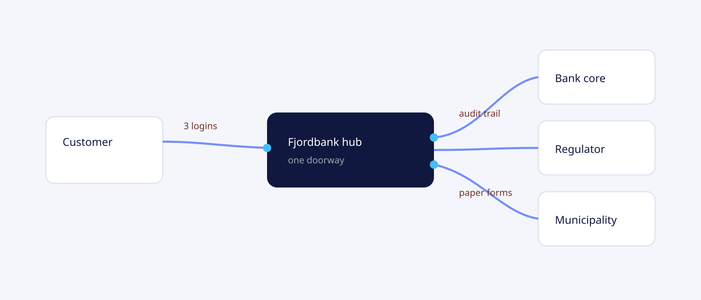
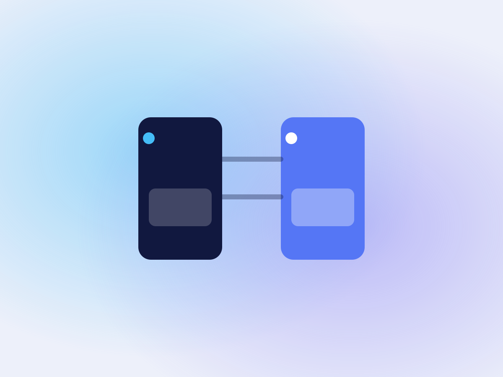

Mercell · Supplier discovery
Helping suppliers find the right opportunities
At Mercell, I led design work across the procurement platform, working with product teams to improve how suppliers discovered and pursued public tender opportunities.
UX Manager / Design Lead
Research revealed an important gap between how the platform was designed to be used and how suppliers actually worked.
Much of their work happened outside Mercell, through emails, documents, colleagues and other tools. The platform was essential for finding tenders and handling formal requirements, but it did not support the full process of deciding which opportunities were worth pursuing.
Understanding how suppliers worked
We investigated how suppliers monitored the market, assessed tenders and decided where to invest their time.
For suppliers, finding an opportunity was only the beginning. They needed to understand whether it was relevant, evaluate the requirements, involve colleagues and decide whether preparing a bid was worth the effort.

These activities were often spread across several tools and people.
The research showed that improving individual features inside Mercell would not necessarily make the overall work easier. We needed to understand the decisions suppliers were making before they committed to a tender.
Why irrelevant alerts were difficult to ignore
Tender notifications exposed one of the clearest problems.
Suppliers received broad alerts containing opportunities that were often irrelevant. Reviewing them took time, but simply reducing the number of notifications was not an obvious solution.
Missing a relevant tender could mean losing business.
Some suppliers had experienced this, making them reluctant to filter alerts too aggressively. They preferred to review more opportunities themselves rather than risk missing an important one.
This explained why the existing notification system persisted despite its inefficiency.
The problem was not just the number of alerts. Suppliers needed a more reliable way to identify relevant opportunities without losing confidence that they were seeing enough of the market.
Rethinking tender discovery
These findings informed our work on the supplier experience and the direction of the product.
We examined how search, filtering, notifications and recommendations could better support different ways of finding business.
Experienced suppliers often relied on established monitoring routines. Others actively searched across several channels. The platform needed to accommodate both behaviours rather than assume everyone discovered opportunities in the same way.

We also explored how Mercell could make better use of marketplace information to help suppliers identify relevant tenders and understand potential opportunities.
The emphasis moved from presenting more tenders to helping suppliers assess which ones deserved their attention.
From research to product direction
As UX Manager and Design Lead, my responsibility extended beyond individual interactions. I worked with product and technology teams to translate research into design priorities and a clearer direction for the supplier experience.
The findings helped us distinguish between problems that could be addressed through better interface design and those that required broader changes to how the platform supported suppliers' work.
Rather than treating notifications, search and tender evaluation as isolated features, we considered how they contributed to the same process.
Result
The research gave the teams a clearer understanding of why suppliers continued to depend on inefficient workflows and where Mercell could provide more useful support.
It also changed the way we approached tender discovery. Reducing notification volume alone would not address the underlying problem. Suppliers needed relevant information and enough confidence in its coverage to make decisions without constantly checking multiple sources.
The work informed product priorities around search, discovery and relevance, with a stronger focus on the decisions suppliers needed to make.
The opportunity was not simply to help suppliers find more tenders, but to help them identify the ones worth pursuing.